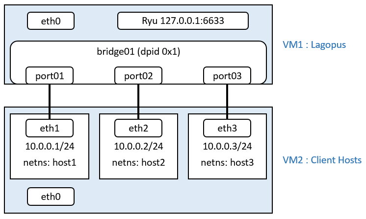

9. Sample Configuration: Building Layer 2 switch using Ryu as an OpenFlow controller¶
This section describes how to configure Lagopus software switch as Layer 2 switch using Ryu as an OpenFlow controller.
- For more information about Ryu, check https://osrg.github.io/ryu/
9.1. Software Versions¶
- Lagopus software switch: Lagopus software switch 0.2.10
- OS: Linux Ubuntu Server 14.04.3 LTS
9.2. Overall toplogy and client host setup¶
In this example, we will connect 3 client hosts to Lagopus software switch bridge ports. You can use 3 physical hosts as client hosts. If you have a Linux host (VM) with 3 or more interfaces, you can either create 3 VMs or create network namespaces to simulate physical hosts.
In this example, we will use network namespace to simulate the client hosts on a single server. You would need at least 2 servers (VMs) for this configuration.
Note
- Make sure NICs on Lagopus software switch are running in promiscuous mode.
- eth1 on client host is connected to port01 of Lagopus software switch, and same for eth2/port02, eth3/port03.
Use below commands on client host to create 3 network namespaces.
host1: $ sudo ip netns add host1 $ sudo ip link set eth1 netns host1 $ sudo ip netns exec host1 ip link set eth1 up $ sudo ip netns exec host1 ip addr add 10.0.0.1/24 brd + dev eth1 host2: $ sudo ip netns add host2 $ sudo ip link set eth2 netns host2 $ sudo ip netns exec host2 ip link set eth2 up $ sudo ip netns exec host2 ip addr add 10.0.0.2/24 brd + dev eth2 host3: $ sudo ip netns add host3 $ sudo ip link set eth3 netns host3 $ sudo ip netns exec host3 ip link set eth3 up $ sudo ip netns exec host3 ip addr add 10.0.0.3/24 brd + dev eth3
You can confirm eth1 is only visible from host1 network namespace using below commands.
$ sudo ip netns exec host1 ip a 1: lo: <LOOPBACK> mtu 65536 qdisc noop state DOWN group default link/loopback 00:00:00:00:00:00 brd 00:00:00:00:00:00 3: eth1: <BROADCAST,MULTICAST,UP,LOWER_UP> mtu 1500 qdisc pfifo_fast state UP group default qlen 1000 link/ether 08:00:27:24:12:72 brd ff:ff:ff:ff:ff:ff inet 10.0.0.1/24 brd 10.0.0.255 scope global eth1 valid_lft forever preferred_lft forever inet6 fe80::a00:27ff:fe24:1272/64 scope link valid_lft forever preferred_lft forever $ ip a 1: lo: <LOOPBACK,UP,LOWER_UP> mtu 65536 qdisc noqueue state UNKNOWN group default link/loopback 00:00:00:00:00:00 brd 00:00:00:00:00:00 inet 127.0.0.1/8 scope host lo valid_lft forever preferred_lft forever inet6 ::1/128 scope host valid_lft forever preferred_lft forever 2: eth0: <BROADCAST,MULTICAST,UP,LOWER_UP> mtu 1500 qdisc pfifo_fast state UP group default qlen 1000 link/ether 08:00:27:a4:17:d0 brd ff:ff:ff:ff:ff:ff inet 10.0.2.15/24 brd 10.0.2.255 scope global eth0 valid_lft forever preferred_lft forever inet6 fe80::a00:27ff:fea4:17d0/64 scope link valid_lft forever preferred_lft forever
9.3. Lagopus software switch Configuration (raw socket)¶
Configure Lagopus software switch by editing
lagopus.dsl.- Change
-dst-addr 127.0.0.1if you want to place Ryu on a host different from Lagopus software switch.
- Change
set interface up using
ipcommand.$ sudo vi /usr/local/etc/lagopus/lagopus.dsl channel channel01 create -dst-addr 127.0.0.1 -protocol tcp controller controller01 create -channel channel01 -role equal -connection-type main interface interface01 create -type ethernet-rawsock -device eth1 interface interface02 create -type ethernet-rawsock -device eth2 interface interface03 create -type ethernet-rawsock -device eth3 port port01 create -interface interface01 port port02 create -interface interface02 port port03 create -interface interface03 bridge bridge01 create -controller controller01 -port port01 1 -port port02 2 -port port03 3 -dpid 0x1 bridge bridge01 enable $ sudo ip link set eth1 up $ sudo ip link set eth2 up $ sudo ip link set eth3 up
9.4. Lagopus software switch Configuration (DPDK)¶
Configure Lagopus software switch by editing
lagopus.dsl.Change
-dst-addr 127.0.0.1if you want to place Ryu on a host different from Lagopus software switch.$ sudo vi /usr/local/etc/lagopus/lagopus.dsl channel channel01 create -dst-addr 127.0.0.1 -protocol tcp controller controller01 create -channel channel01 -role equal -connection-type main interface interface01 create -type ethernet-dpdk-phy -port-number 0 interface interface02 create -type ethernet-dpdk-phy -port-number 1 interface interface03 create -type ethernet-dpdk-phy -port-number 2 port port01 create -interface interface01 port port02 create -interface interface02 port port03 create -interface interface03 bridge bridge01 create -controller controller01 -port port01 1 -port port02 2 -port port03 3 -dpid 0x1 bridge bridge01 enable $
9.5. Install Ryu and run simple_switch Ryu application¶
Install necessary packages
Use pip command and install Ryu.
$ sudo apt-get install python-setuptools python-pip python-dev \ libxml2-dev libxslt-dev $ sudo pip install ryu
Run below only if required.
$ sudo pip install oslo.config $ sudo pip install six --upgrade
Run simple_switch Ryu application.
$ ryu-manager --verbose /usr/local/lib/python2.7/dist-packages/ryu/app/simple_switch_13.py
9.6. Start Lagopus software switch (raw socket)¶
Open new terminal to start Lagopus software switch.
$ sudo lagopus
9.7. Start Lagopus software switch (DPDK)¶
Follow instruction in Installation with DPDK to setup DPDK environment.
- Load the kernel modules.
- Set up Huge pages.
- NIC assignment. (With an additional interface, eth3)
Open new terminal to start Lagopus software switch.
$ sudo lagopus -- -c3 -n1 -- -p7
9.8. Confirm simple switch is running¶
On termal running ryu, below message will be shown once you start Lagopus software switch and is connected to Ryu.
connected socket:<eventlet.greenio.base.GreenSocket object at 0x7f1de23b61d0> address:('127.0.0.1', 49928) hello ev <ryu.controller.ofp_event.EventOFPHello object at 0x7f1de23b6810> move onto config mode EVENT ofp_event->SimpleSwitch13 EventOFPSwitchFeatures switch features ev version=0x4,msg_type=0x6,msg_len=0x20,xid=0xc28ef426,OFPSwitchFeatures(auxiliary_id=0,capabilities=79,datapath_id=1,n_buffers=65535,n_tables=255) move onto main mode
Ping from host1 to host2 to confirm simple switch is running as expected
$ sudo ip netns exec host1 ping 10.0.0.2 PING 10.0.0.2 (10.0.0.2) 56(84) bytes of data. 64 bytes from 10.0.0.2: icmp_seq=1 ttl=64 time=10.9 ms 64 bytes from 10.0.0.2: icmp_seq=2 ttl=64 time=2.73 ms 64 bytes from 10.0.0.2: icmp_seq=3 ttl=64 time=2.04 ms
Ryu will show below message when ping is successful.
EVENT ofp_event->SimpleSwitch13 EventOFPPacketIn packet in 1 08:00:27:61:87:73 ff:ff:ff:ff:ff:ff 1 EVENT ofp_event->SimpleSwitch13 EventOFPPacketIn packet in 1 08:00:27:21:2a:58 08:00:27:61:87:73 2 EVENT ofp_event->SimpleSwitch13 EventOFPPacketIn packet in 1 08:00:27:61:87:73 08:00:27:21:2a:58 1
Confirm flow Ryu has created using
Lagosh> show flow.$ lagosh Lagosh> show flow [ { "tables": [ { "table": 0, "flows": [ { "stats": { "packet_count": 4, "byte_count": 354 }, "hard_timeout": 0, "actions": [ { "apply_actions": [ { "output": 1 } ] } ], "priority": 1, "idle_timeout": 0, "cookie": 0, "dl_dst": "08:00:27:61:87:73", "in_port": 2 }, { "stats": { "packet_count": 3, "byte_count": 256 }, "hard_timeout": 0, "actions": [ { "apply_actions": [ { "output": 2 } ] } ], "priority": 1, "idle_timeout": 0, "cookie": 0, "dl_dst": "08:00:27:21:2a:58", "in_port": 1 }, { "stats": { "packet_count": 3, "byte_count": 218 }, "hard_timeout": 0, "actions": [ { "apply_actions": [ { "output": "controller" } ] } ], "priority": 0, "idle_timeout": 0, "cookie": 0 } ] } ], "name": "bridge01", "is-enabled": true } ]